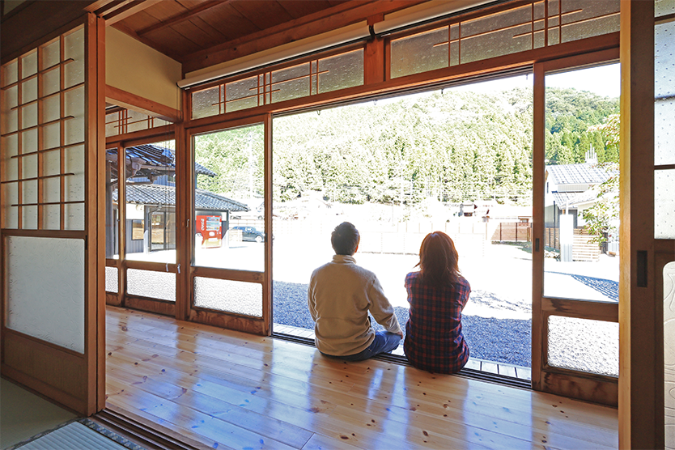
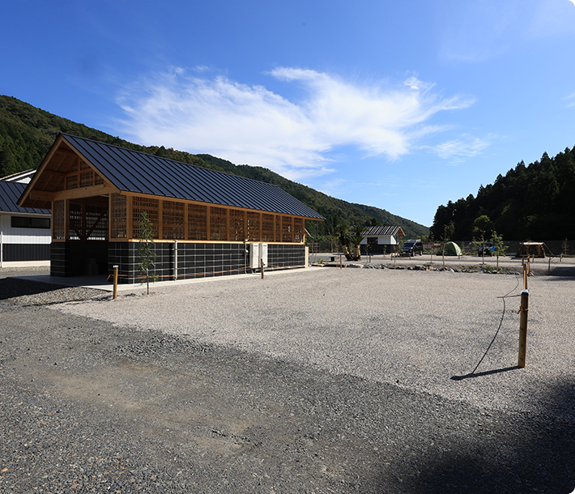
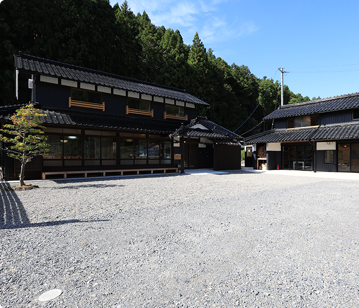
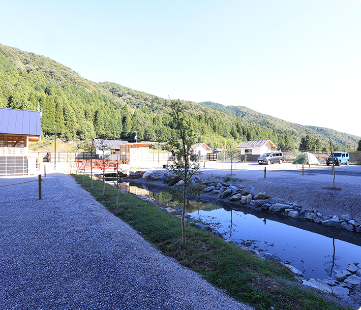
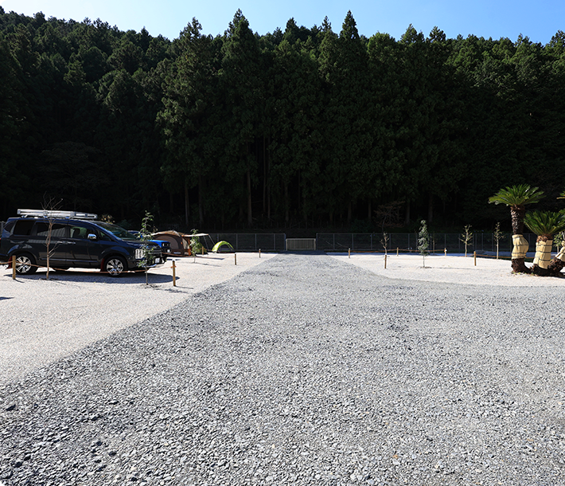

金原里山キャンプ場について
自然を楽しむ。
懐かしさに癒される。

子どもの頃、おばあちゃんのいる実家に帰った時の畳のにおい、縁側の陽だまりの暖かさ、
そこから見る山々。
駄菓子屋さんで買ったアイスを食べながら歩く田んぼ道。
金原里山キャンプ場は、そんな里山の懐かしさと日本らしさを感じることができる、
ほっとできるキャンプ場です。
日々のせわしない喧噪を離れ、一人でゆっくりと過ごす。
家族と一緒にのんびりと楽しむ。
昭和の風情を感じる風景が広がる、心温まるひとときをお届けします。
ここで過ごす時間が、あなたの心に深い思い出を残しますように。
金原里山キャンプ場はそんな「のどか」なキャンプ場です。
金原里山キャンプ場の楽しみ方

自然を楽しむ
金原里山キャンプ場は山の谷あいにあり、喉かな田舎の風景を感じることができます。
春には樹齢1500余年を誇る根尾谷淡墨ザクラが見頃を迎え、その美しさに心を奪われます。
また、山々を彩る山ツツジの花が一面に咲き誇り、訪れる人々を歓迎します。
夏は新緑の森でキャンプを楽しみながら、清流で川遊びができます。
涼しい木陰でのんびりとした時間を過ごしたり、夜には満天の星空を眺めたりして、都会の喧騒を忘れるひとときを過ごせます。
秋には紅葉が山々を鮮やかに染め上げます。
紅葉狩りを楽しみながら、さわやかな秋風を感じることができます。
また、地元の秋の味覚を味わいながら、自然の恵みを堪能してください。

懐かしさを楽しむ
キャンプ場には古民家をリフォームした「母屋」があります。
共用エリアであるこちらの施設では、スイカ割りやヨーヨー釣りなどの懐かしいイベントを行い、古き良き日本を体感いただくことができます。
また、受付のある「はなれ」には懐かしい駄菓子やアイスを販売しております。
あなたも子どもに戻って、あの時に感じた「自由」を堪能してください。

川遊びを楽しむ
金原里山キャンプ場では、小さい子供でも安心して水遊びができる浅い小川をキャンプ場の中央に配置しています。
夏の暑い日には水の音とともに涼しさを感じることができます。
また、小川の両側には紅葉などの植栽が施されており、秋には美しい紅葉を楽しむことができます。
自然に囲まれた環境で、子供たちは水遊びを楽しみ、大人は四季折々の風景を満喫することができます。
金原里山キャンプ場での川遊びは、家族全員が心地よい時間を過ごせるひとときです。

安心して楽しむ
金原里山キャンプ場では、女性が安心してソロキャンプを楽しむことができる環境を整えています。
敷地内は常駐スタッフから目がとどくようキャンプ場全体が見渡せる設計となっており、不安なく自然を満喫することができます。
また、清潔なシャワー施設やトイレも完備されており、女性キャンパーが快適に過ごせるよう配慮しています。
またキャンプ場全体を1.8メートルのフェンスで囲い、動物や自然環境に対する配慮を行っております。
自然の中で自分だけの時間を楽しみたい方に最適な安心して過ごせるキャンプ場です。